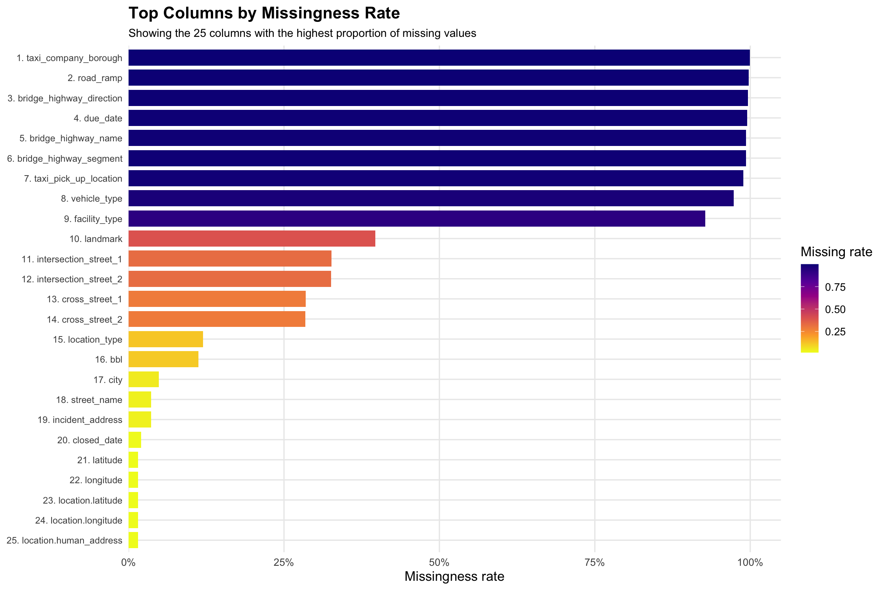

Code
library(dplyr)
library(tidyr)
library(ggplot2)
library(stringr)
library(memoise)New York City’s 311 system is how, residents let the city know about issues in their communities, such as noise, heating problems, trash, and illegal parking etc. Each entry in the 311 data represents a moment when someone was concerned enough to reach out to the city for assistance.
The raw data come from the NYC Open Data 311 service request API. To avoid time-outs and memory issues, we chose to download the data month-by-month, combined, and then saved as an .rds file for efficient reuse. In total, the working dataset contains around 6M over a two-year window, from early 2023 through late 2024.
library(dplyr)
library(tidyr)
library(ggplot2)
library(stringr)
library(memoise)# library(RSocrata)
# library(dplyr)
# options(timeout = 600)
# base_url <- "https://data.cityofnewyork.us/resource/erm2-nwe9.json"
# get_month_data <- function(year, month) {
# start <- sprintf("%d-%02d-01T00:00:00", year, month)
# # end = first day of next month
# if (month == 12) {
# end <- sprintf("%d-01-01T00:00:00", year + 1)
# } else {
# end <- sprintf("%d-%02d-01T00:00:00", year, month + 1)
# }
# url <- sprintf(
# "%s?$where=created_date >= '%s' AND created_date < '%s'",
# base_url, start, end
# )
# message("Fetching: ", start, " to ", end)
# read.socrata(url)
# }
# # Example: all months of 2023
# months <- 1:12
# list_2023 <- lapply(months, function(m) get_month_data(2023, m))
# data_2023 <- bind_rows(list_2023)
# list_2024 <- lapply(months, function(m) get_month_data(2024, m))
# data_2024 <- bind_rows(list_2024)
# combined <- rbind(data_2023,data_2024)
# saveRDS(combined, "nyc_311_data.rds")combined=combined <- readRDS("nyc_311_data.rds")
#combined=combined <- readRDS("nyc_311_data.rds")Each row corresponds to a single 311 complaint and includes the following groups of variables:
created_date: when the complaint was submittedclosed_date: when the complaint was closed (if ever)resolution_action_updated_date: when a resolution action was loggedagency, agency_namecomplaint_type and a higher-level complaint_bucket (custom grouping)descriptor (more detailed description of the issue)status (e.g., "Closed", "Assigned", "In Progress")borough, incident_zip, incident_addresslocation_type (e.g., "RESIDENTIAL BUILDING", "Street/Sidewalk")latitude, longitudeopen_data_channel_type (e.g., ONLINE, PHONE, MOBILE, OTHER)resolution_description and resolution_action fieldsBefore doing any substantive analysis, we examined the completeness of the raw 311 dataset. The goal of this step was to understand which variables are reliable, which ones are mostly empty, and where cleaning or dropping variables is justified.
missing_values_summary <- colSums(is.na(combined))
missing_columns <- missing_values_summary[missing_values_summary > 0]
missing_table <- data.frame(
Column = names(missing_columns),
MissingCount = as.numeric(missing_columns)
)
sorted_table <- missing_table |>
arrange(desc(MissingCount))
print(sorted_table) Column MissingCount
1 taxi_company_borough 6679852
2 road_ramp 6668175
3 bridge_highway_direction 6660223
4 due_date 6651779
5 bridge_highway_name 6639447
6 bridge_highway_segment 6639437
7 taxi_pick_up_location 6611318
8 vehicle_type 6504338
9 facility_type 6199357
10 landmark 2652950
11 intersection_street_1 2180001
12 intersection_street_2 2176719
13 cross_street_1 1903203
14 cross_street_2 1902070
15 location_type 800974
16 bbl 752073
17 city 325436
18 street_name 244008
19 incident_address 243812
20 closed_date 133656
21 latitude 102706
22 longitude 102706
23 location.latitude 102706
24 location.longitude 102706
25 location.human_address 102706
26 x_coordinate_state_plane 102597
27 y_coordinate_state_plane 101804
28 resolution_description 93259
29 descriptor 78842
30 incident_zip 72906
31 resolution_action_updated_date 37625
32 address_type 30391
33 created_date 1library(dplyr)
library(tidyr)
library(ggplot2)
library(scales)
# 1) Compute missingness per column
miss_by_col_all <- combined |>
summarise(across(everything(), \(x) sum(is.na(x)))) |>
pivot_longer(everything(), names_to = "column", values_to = "missing_n") |>
mutate(
total_n = nrow(combined),
missing_rate = missing_n / total_n
) |>
arrange(desc(missing_n))
# 2) Top 25 columns by missing rate, add index label
top_missing_rate <- miss_by_col_all |>
slice_max(missing_rate, n = 25) |>
arrange(desc(missing_rate)) |>
mutate(
rank_label = paste0(row_number(), ". ", column),
rank_label = factor(rank_label, levels = rev(rank_label)) # for coord_flip
)
# 3) Nice bar plot
p_missing <- ggplot(top_missing_rate,
aes(x = rank_label, y = missing_rate, fill = missing_rate)) +
geom_col(width = 0.8) +
coord_flip() +
scale_y_continuous(
labels = percent_format(accuracy = 1),
expand = expansion(mult = c(0, 0.05))
) +
scale_fill_viridis_c(
option = "C",
direction = -1,
name = "Missing rate"
) +
labs(
title = "Top Columns by Missingness Rate",
x = "Features",
y = "Missingness rate"
) +
theme_minimal(base_size = 13) +
theme(
panel.grid.minor = element_blank(),
axis.text.y = element_text(size = 9),
axis.text.x = element_text(size = 10),
plot.title = element_text(face = "bold", size = 16),
plot.subtitle = element_text(size = 11),
legend.position = "right"
)
p_missing
# 4) Threshold + list of columns to drop (same logic as before)
missing_threshold <- 0.60
cols_to_drop_by_missing <- miss_by_col_all |>
filter(missing_rate > missing_threshold) |>
pull(column)The first plot shows the 25 columns with the highest proportion of missing values. Each bar is a column, ordered from most to least missing, and the color scale encodes the missingness rate.
Key observations:
taxi_company_borough, road_ramp, bridge_highway_direction, bridge_highway_name,bridge_highway_segment, and taxi_pick_up_location.intersection_street_1, intersection_street_2, cross_street_1, cross_street_2) has moderate missingness (roughly 25–40%), typically for records where complaints do not occur at an intersection. We decided to remove extreme missingness columns from final dataframe, which will add noise and complexity without contributing to the main objective of the project and columns with moderate missingness but high potential value were kept for further analysis.set.seed(42)
sampled_data <- combined[sample(1:nrow(combined), 5000), ]
missing_long <- as.data.frame(is.na(sampled_data)) |>
pivot_longer(cols = everything(), names_to = "Column", values_to = "IsMissing")
missing_long <- cbind(RowIndex = rep(1:nrow(sampled_data), times = ncol(sampled_data)), missing_long)
# Plotting heatmap of missing data
ggplot(missing_long, aes(x = Column, y = RowIndex, fill = IsMissing)) +
geom_tile() +
scale_fill_manual(values = c("FALSE" = "white", "TRUE" = "red"), name = "Missing") +
labs(title = "Heatmap of Missing Data (Sampled Rows)",
x = "Columns",
y = "Row Index") +
theme_minimal() +
theme(axis.text.x = element_text(angle = 90, hjust = 1))
To complement the summary bar chart, we also visualized missingness row by row for a random sample of records. In this heatmap:
closed_date for still-open complaints).created_date, complaint_type, and borough appear almost entirely white, confirming that they are reliable.library(dplyr)
library(ggplot2)
library(scales)
# Borough counts on cleaned data
borough_counts <- combined |>
count(borough, name = "n") |>
mutate(
share = n / sum(n),
label_text = paste0(comma(n), " (", percent(share, accuracy = 0.05), ")")
) |>
arrange(desc(n))
ggplot(borough_counts,
aes(x = reorder(borough, n), y = n)) +
geom_col(width = 0.7, fill = "#1b9e77") +
scale_y_continuous(
labels = scales::comma,
breaks = scales::pretty_breaks(n = 8),
expand = expansion(mult = c(0, 0.15))
) +
labs(
title = "Borough Distribution of 311 Complaints",
x = "NYC Borough",
y = "Number of complaints"
) +
theme_minimal(base_size = 13) +
theme(
panel.grid.minor = element_blank(),
axis.text.y = element_text(size = 10),
axis.text.x = element_text(size = 10),
plot.title = element_text(face = "bold", size = 16),
plot.subtitle = element_text(size = 11),
legend.position = "right"
)
Interpretation:
This plot acts as a sanity check that the dataset reflects known patterns of NYC population and service use and also it provides context for later plots that break down complaint types and system performance within each borough.
Missingness Pattern for Core Categorical Variables
#label
valid_boros <- c("MANHATTAN", "BROOKLYN", "QUEENS", "BRONX", "STATEN ISLAND")
df_clean_final <- combined |>
filter(borough %in% valid_boros)
df_clean_final <- df_clean_final |>
dplyr::select(
unique_key, created_date, closed_date, resolution_action_updated_date,
agency, agency_name, complaint_type, descriptor, status,
borough, city, incident_zip, incident_address,
latitude, longitude, location_type,
open_data_channel_type,
resolution_description
)
#saveRDS(df_clean_final, "df_clean_final.rds")combined0 <- combined |>
mutate(
across(where(is.character), \(x) str_squish(x)),
across(where(is.character), \(x) na_if(x, ""))
)
miss_by_col_all <- combined0 |>
summarise(across(everything(), \(x) sum(is.na(x)))) |>
pivot_longer(everything(), names_to = "column", values_to = "missing_n") |>
mutate(total_n = nrow(combined0),
missing_rate = missing_n / total_n) |>
arrange(desc(missing_n))library(dplyr)
library(stringr)
library(lubridate)
df0 <- df_clean_final |>
mutate(
across(where(is.character), \(x) str_squish(x)),
across(where(is.character), \(x) na_if(x, "")),
across(where(is.character), \(x) na_if(x, "NA")),
across(where(is.character), \(x) na_if(x, "N/A"))
)library(redav)
critical_cols <- c("location_type", "complaint_type", "borough")
plot_missing(df0[critical_cols])
Main findings:
borough and complaint_type are essentially complete almost no records are missing these fields.location_type has a small but noticeable amount of missingness (around 10–15% of rows). The plot shows two main patterns:
location_type is missing.location_type (e.g., location-type heatmaps and action distributions), we restrict to complete cases so that percentages are meaningful."Unknown" or NA category for location_type, so that rows are not discarded unnecessarily.Many of the most interesting 311 questions are spatial (Which neighborhoods complain the most? Where are issues slowest to resolve?), so we checked the quality of the geographic fields before using them.
library(dplyr)
library(ggplot2)
library(scales)
# 1. Compute geolocation validity
geo_check <- df0 |>
transmute(
latitude = suppressWarnings(as.numeric(latitude)),
longitude = suppressWarnings(as.numeric(longitude)),
geo_ok = !is.na(latitude) & !is.na(longitude) &
between(latitude, 40, 41.2) &
between(longitude, -74.5, -73.2)
)
# 2. Prepare summary for % view
geo_summary <- geo_check |>
count(geo_ok) |>
mutate(
label = ifelse(geo_ok, "Valid NYC Coordinates", "Invalid / Missing Coordinates"),
pct = n / sum(n)
)
# 3. Plot
ggplot(geo_summary, aes(x = label, y = pct, fill = label)) +
geom_col(width = 0.6, alpha = 0.85) +
geom_text(aes(label = percent(pct, accuracy = 0.1)),
vjust = -0.5, size = 5) +
scale_y_continuous(labels = percent_format(accuracy = 1),
expand = expansion(mult = c(0, 0.1))) +
scale_fill_manual(values = c("#1b9e77", "#d95f02")) +
labs(
title = "Geolocation Validity of 311 Records",
x = "Geolocation Status",
y = "% of Records",
fill = NULL
) +
theme_minimal(base_size = 14) +
theme(
legend.position = "none",
plot.title = element_text(face = "bold")
)
The bar chart shows:
library(dplyr)
library(ggplot2)
library(scales)
df_zip <- df_clean_final |>
mutate(
zip_num = suppressWarnings(as.numeric(incident_zip)),
zip_category = case_when(
is.na(zip_num) ~ "Missing ZIP",
zip_num >= 10000 & zip_num <= 11697 ~ "Valid NYC ZIP",
TRUE ~ "Invalid ZIP"
)
) |>
count(zip_category) |>
mutate(
percent = n / sum(n),
label = paste0(comma(n), " (", percent_format(accuracy = 0.1)(percent), ")")
)
ggplot(df_zip, aes(x = reorder(zip_category, -n), y = n, fill = zip_category)) +
geom_col(width = 0.6) +
scale_fill_manual(values = c(
"Valid NYC ZIP" = "#1b9e77",
"Invalid ZIP" = "#d95f02",
"Missing ZIP" = "#7570b3"
)) +
# FIX: expand limits so labels never get clipped or flipped
scale_y_continuous(
labels = comma,
expand = expansion(mult = c(0, 0.15)) # extra 15% space above
) +
labs(
title = "ZIP Code Quality Summary",
x = "Zip Code Category",
y = "Number of Records"
) +
theme_minimal(base_size = 13) +
theme(
legend.position = "none",
plot.title = element_text(face = "bold", size = 18)
)
df_clean <- df_clean_final %>%
mutate(
zip_num = suppressWarnings(as.numeric(incident_zip))
) %>%
filter(
!is.na(zip_num),
zip_num >= 10000,
zip_num <= 11697
) %>%
select(-zip_num)Performing a similar quality check for ZIP codes by comparing each incident_zip to a list of valid NYC ZIP codes and allowing for missing values.
Cleaning decision.
Overall, both latitude–longitude and ZIP quality checks suggest that spatial information in the dataset is highly reliable, with only a small fraction of problematic records.
saveRDS(df_clean_final, "df_clean_final.rds")